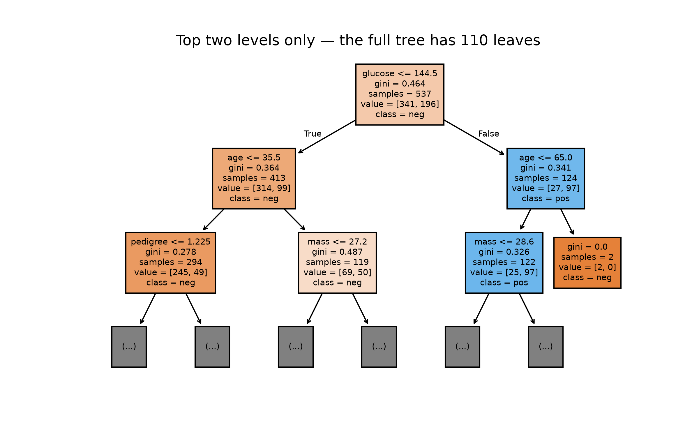

Every cell on this page is a real R or Python cell, run against data/diabetes.csv with the same split as Chapter 27.
28.1 Objectives
Fit a classification tree, draw it, and read a prediction off the drawing for one patient without running any code.
Produce a model with perfect training accuracy and show, in the same cell, that it is worse than useless on held-out patients.
Choose tree_depth and min_n by grid search over resampled training data, and say why the test set took no part in that choice.
28.2 Why this, here
Chapter 27 left a logistic regression with a test AUC around 0.8. Its boundary is one straight line in eight dimensions, which is a strong assumption about how diabetes risk is organised. A tree makes almost no assumption: it splits the data on one variable at a time and keeps going. That freedom is the attraction, and it is also the whole problem — a tree allowed to keep going will eventually isolate every training patient in a leaf of their own, at which point it is a lookup table for data you already have.
This is the first model in the booklet where the honest evaluation and the flattering one differ by thirty points.
import pandas as pd, numpy as np, matplotlib.pyplot as pltfrom sklearn.model_selection import train_test_split, GridSearchCV, StratifiedKFoldfrom sklearn.tree import DecisionTreeClassifier, plot_treefrom sklearn.metrics import accuracy_score, recall_score, roc_auc_scorediabetes = pd.read_csv("data/diabetes.csv")X = diabetes.drop(columns="diabetes")y = (diabetes["diabetes"] =="pos").astype(int)X_tr, X_te, y_tr, y_te = train_test_split(X, y, test_size=0.3, random_state=123, stratify=y)tree_fit = DecisionTreeClassifier(random_state=123).fit(X_tr, y_tr)fig, ax = plt.subplots(figsize=(8, 5))plot_tree(tree_fit, max_depth=2, feature_names=list(X.columns), class_names=["neg", "pos"], filled=True, fontsize=7, ax=ax)ax.set_title("Top two levels only — the full tree has "f"{tree_fit.get_n_leaves()} leaves")plt.show()

Each box holds the rule, the counts of pos and neg training patients reaching it, and the share of the training rows it covers. A prediction is one walk from the root to a leaf; nothing is multiplied, nothing is exponentiated, and a clinician can audit the path. That transparency is the main clinical argument for trees.
#> model set accuracy sens spec auc
#> 0 sklearn defaults train 1.00000 1.000000 1.000000 1.000000
#> 1 sklearn defaults test 0.61039 0.535714 0.653061 0.594388
tree_fit.get_n_leaves()
#> np.int64(110)
ImportantThe two defaults are not the same model, and this is not a bug in either
decision_tree() in R hands rpart its own defaults, which include a complexity parameter of 0.01: the tree is pruned as it is built, and you get about ten leaves and a train-test accuracy gap of four points. DecisionTreeClassifier() in Python has no such stopping rule and grows until every leaf is pure: 110 leaves, fourteen levels deep, training accuracy of exactly 1.000, and a test accuracy below the majority-class rule.
Both libraries are behaving as documented. The lesson is that “I used the default tree” names two different models, and that the published accuracy of a tree tells you nothing until you know how it was stopped. Print the number of leaves whenever you fit one.
28.4 Worked example — the same thing in R, on purpose
To see the Python default’s behaviour in R, remove the pruning: a complexity parameter of zero, leaves allowed down to two patients, depth up to thirty.
#> # A tibble: 2 × 6
#> model set accuracy sens spec auc
#> <chr> <chr> <dbl> <dbl> <dbl> <dbl>
#> 1 unconstrained train 1 1 1 1
#> 2 unconstrained test 0.654 0.548 0.714 0.631
n_leaves(deep_fit)
#> [1] 126
# Nothing to do: this is what DecisionTreeClassifier() already did above.tree_fit.get_depth(), tree_fit.get_n_leaves()
#> (14, np.int64(110))
Training accuracy 1.000. Training AUC 1.000. A model that has not made a single mistake on the data it was shown, and that you would present to no one.
28.5 Task 1 — Take the freedom away by hand
Fit a third tree with tree_depth = 3 and min_n = 20 (in Python, max_depth=3 and min_samples_leaf=20), score it, and measure the gap between its training and test accuracy.
# Replace every ______ below, then run this cell.source("checks/checks.R")shallow_fit <-decision_tree(tree_depth = ______, min_n = ______) |>set_engine("rpart") |>set_mode("classification") |>fit(diabetes ~ ., data = train)s <-tree_scores(shallow_fit, "depth 3")sn_leaves(shallow_fit)check_overfit_gap(s$accuracy[s$set =="train"], s$accuracy[s$set == ______], label ="accuracy")
TipStuck?
The two numbers are in the sentence above the cell. The last blank is the name of the row you want — the same strings tree_scores() puts in its set column.
# Replace every ______ below, then run this cell.import sys; sys.path.append("checks")from checks import*shallow_fit = DecisionTreeClassifier(max_depth=______, min_samples_leaf=______, random_state=123).fit(X_tr, y_tr)s = tree_scores(shallow_fit, "depth 3")print(s)print(shallow_fit.get_n_leaves())check_overfit_gap(s.loc[s["set"] =="train", "accuracy"].item(), s.loc[s["set"] == ______, "accuracy"].item(), label="accuracy")
The gap closes. Note what else happens to sensitivity, and ask whether this tree is better or merely more honest about being mediocre.
28.6 Task 2 — Stop guessing: search the grid
Trying values by hand does not scale past two hyperparameters, and choosing among them by test-set performance would spend the test set. The alternative is to split the training rows again, several ways, and score every candidate on rows it did not see within each split.
NoteFive folds, and why the test set is still untouched
vfold_cv(train, v = 5) cuts the training rows into five parts, fits on four and scores on the fifth, five times, and averages. Every number used to choose hyperparameters comes from training rows. The test set is opened once, at the end of Task 3, and never again. Tuning on the test set is not a small sin: it converts your held-out estimate into a training estimate, silently.
# Replace every ______ below, then run this cell.tree_spec <-decision_tree(tree_depth =tune(), min_n =tune(),cost_complexity = ______) |>set_engine("rpart") |>set_mode("classification")tree_grid <-grid_regular(tree_depth(range =c(2L, 10L)),min_n(range =c(5L, 40L)),cost_complexity(range =c(-3, -1)),levels =3)nrow(tree_grid)set.seed(123)folds <-vfold_cv(train, v =5, strata = diabetes)tree_wf <-workflow() |>add_model(tree_spec) |>add_formula(diabetes ~ .)tree_res <-tune_grid(tree_wf, resamples = ______, grid = tree_grid,metrics =metric_set(roc_auc, accuracy))show_best(tree_res, metric ="roc_auc", n =5)
TipStuck?
A hyperparameter you want the grid to choose is not given a number. The second blank is the object holding the five resamples.
# Replace every ______ below, then run this cell.param_grid = {"max_depth": [2, 6, 10],"min_samples_leaf": [5, 20, 40],"ccp_alpha": [0.001, 0.01]}search = GridSearchCV(DecisionTreeClassifier(random_state=123), param_grid, cv=StratifiedKFold(5, shuffle=True, random_state=123), scoring=______).fit(X_tr, y_tr)print(search.best_params_, round(search.best_score_, 3))print(np.round([search.cv_results_["mean_test_score"].min(), search.cv_results_["mean_test_score"].max()], 3))
Look at the std_err column in R’s show_best() output, or at the spread between the best and worst grid point in Python. The whole grid spans about 0.06–0.10 of AUC and the standard error of each estimate is about 0.02–0.03. The top few rows are not distinguishable from one another, so treat select_best() as picking one of several equally good settings rather than as finding the right one.
28.7 Task 3 — Finalise, and open the test set once
# Replace every ______ below, then run this cell.best_tree <-select_best(tree_res, metric ="roc_auc")best_treefinal_fit <-finalize_workflow(tree_wf, ______) |>fit(data = train)final_scores <-tree_scores(final_fit, "tuned")final_scoresn_leaves(final_fit)check_beats_prevalence(final_scores$accuracy[final_scores$set =="test"], test$diabetes)check_overfit_gap(final_scores$auc[final_scores$set =="train"], final_scores$auc[final_scores$set =="test"], label ="AUC")
TipStuck?
finalize_workflow() takes the workflow and the one-row tibble of chosen values you printed on the line above.
# Replace every ______ below, then run this cell.final_fit = search.______f = tree_scores(final_fit, "tuned")print(f)print(final_fit.get_n_leaves())check_beats_prevalence(f.loc[f["set"] =="test", "accuracy"].item(), y_te)check_overfit_gap(f.loc[f["set"] =="train", "auc"].item(), f.loc[f["set"] =="test", "auc"].item(), label="AUC")
TipStuck?
GridSearchCV with refit=True, the default, has already refitted the winning settings on the whole training set and stored the result on an attribute whose name says so.
check_overfit_gap passes in R, where the tuned tree’s train and test AUCs sit within 0.01 of each other, and fails in Python, where the gap is about 0.13. The grids are not identical and neither are the folds, so the two searches landed on trees of different sizes — six leaves against sixteen. Tuning narrows the gap; it does not guarantee to close it, and a check that fails is reporting a fact about your model rather than a mistake in your code.
Finally, draw the tuned tree with the call from the first worked example. A tree you can read aloud is worth more than two points of AUC in most clinical settings.
28.8 The result that should bother you
The unconstrained tree classifies every one of the 537 training patients correctly. Its test accuracy is about 0.61–0.65, against a majority-class rule that scores 0.636 with no data at all, and its test AUC is about 0.59–0.63, against the shuffled-label spread you measured in Chapter 27.
Three steps.
Perfect training accuracy is not a strong result; it is the absence of a result. Any model with enough capacity can memorise 537 rows, and the one that does so carries no information beyond the rows themselves.
The failure is invisible from the training side. Nothing in the fit warns you. Only the held-out rows distinguish a tree that has learnt from a tree that has memorised, which is why the split from Day 1 is not an optional refinement.
The cure is less capacity, not more data cleaning or more predictors. The tuned tree has six leaves in R and sixteen in Python, rather than a hundred and more, loses nothing on the training rows that was worth keeping, and gains about fourteen points of test AUC.
And the comparison that should temper your enthusiasm for the tuned tree: the logistic regression in Chapter 27 reached a test AUC of 0.78–0.84 on the same split. The tuned tree reaches about 0.74–0.77. The flexible model, properly tuned, is behind the straight line.
28.9 Reflection
A colleague reports a decision tree with 99% accuracy and offers to show you the code. What do you ask for instead, and in what order?
The tuned tree has six leaves. Name one clinical advantage of that over a model with a hundred and thirty, that has nothing to do with accuracy.
28.10 Stretch
NoteStretch 1 — The one-standard-error rule
select_by_one_std_err() picks the simplest model whose performance is within one standard error of the best. Apply it to tree_res, with desc(cost_complexity) as the ordering, and compare the tree you get. Argue for one of the two choices in a sentence a reviewer would accept.
NoteStretch 2 — How stable is the tree itself?
Refit the default tree on five bootstrap resamples of the training rows and draw each. The split at the root is usually the same variable; the splits three levels down are usually not. What does that instability imply about reading a single tree as an explanation of the disease?
NoteStretch 3 — A tree on the length-of-stay data
decision_tree(mode = "regression") on data/los_data.csv, against the linear model of Chapter 26. The tree loses, and the reason — a tree predicts a constant within each leaf, so it cannot extrapolate a straight relationship — is the same reason it won nothing here.
28.11 What you can and cannot now claim
Can: that you can fit, draw, deliberately break and then tune a decision tree, and that you can tell the difference between a model that has learnt and one that has memorised without looking at the test set more than once.
Cannot: that a tuned tree is a competitive model. It is not, here. Stretch 2 points at why — a single tree is unstable, and its instability is variance you could average away. Averaging many unstable trees is Chapter 29.